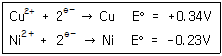
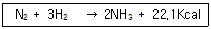
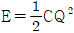
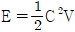
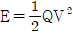
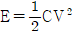
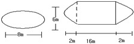

위험물산업기사 (2008-09-07 기출문제)
1과목: 일반화학
1. 구리와 묽은 질산을 반응시키면 주로 발생하는 기체는?(오류 신고가 접수된 문제입니다. 반드시 정답과 해설을 확인하시기 바랍니다.)
- 일산화질소
- 이산화탄소
- 이산화황
- 이황화산소
(정답률: 62%)

2. 0.1N HCl 10ml를 90ml 의 증류수에 희석하였다. 이용액의 pH 값은 얼마인가?
- 1
- 2
- 3
- 4
(정답률: 44%)
3. 다음 화합물 중 밑줄 친 원소의 산화수가 가장 큰 것은?
- KMnO4
- Al2O3
- NH3
- Cr2O72-
(정답률: 76%)
4. 탄산음료의 마개를 따면 기포가 발생한다. 이는 어떤 법칙으로 설명이 가능한가?
- 보일의 법칙
- 샤를의 법칙
- 헨리의 법칙
- 르샤틀리에의 법칙
(정답률: 87%)
5. 벤젠에 진한 질산과 진한 황산의 혼합물을 작용 시킬 때 황산이 촉매와 탈수제 역할을 하여 얻어지는 화합물은?
- 니트로벤젠
- 클로로벤젠
- 알킬벤젠
- 벤젠술폰산
(정답률: 73%)
6. AgCl 의 용해도는 0.0016g/L 이다. 이 AgCl 의 용해도곱 (Solubility product) 은 약 얼마인가? (단, 원자량은 각각 Ag 108, Cl 35.5 이다.)
- 1.25 × 10-10
- 2.24 × 10-10
- 1.12 × 10-5
- 4 × 10-4
(정답률: 50%)
7. 0.5M HCl 100ml 와 0.1M NaOH 100ml를 혼합한 용액의 pH는 약 얼마인가?(오류 신고가 접수된 문제입니다. 반드시 정답과 해설을 확인하시기 바랍니다.)
- 0.3
- 0.5
- 0.7
- 0.9
(정답률: 39%)
8. 다음 중 암모니아성 질산은 용액과 반응하여 은거울을 만드는 것은?
- CH3CH2OH
- CH3OCH3
- CH3COCH3
- CH3CHO
(정답률: 76%)
9. 황산구리 수용액을 전기분해하여 음극에서 63.54g 의 구리를 석출시키고자 한다. 10A의 전기를 흐르게 하면 전기분해에는 약 몇 시간이 소요되는가? (단, 구리의 원자량은 63.54 이다.)
- 2.72
- 5.36
- 8.13
- 10.8
(정답률: 78%)
10. 다음은 표준 수수전극과 짝지어 얻은 반쪽 반응 표준환원 전위값 이다. 이들 반쪽 전지를 짝지었을 EO 얻어지는 전자의 표준 전위차 E° 는?

- +0.11V
- -0.11V
- +0.57V
- -0.57V
(정답률: 60%)
11. 1기압 27℃에서 어떤 기체 2g 의 부피가 0.82L 이다. 이 기체의 분자량은 약 얼마인가?
- 16
- 32
- 60
- 72
(정답률: 67%)
12. 농도를 모르는 황산 용액 20ml 가 있다. 이것을 중화 시키려면 0.2N 의 NaOH 용액이 10ml 가 필요하다. 황산의 몰농도는 몇 M 인가?
- 0.01
- 0.02
- 0.⑤
- 0.10
(정답률: 29%)
13. 다음 중 방향족 화합물이 아닌 것은?
- 톨루엔
- 아세톤
- 크레졸
- 아닐린
(정답률: 73%)
14. 페놀에 대한 설명 중 틀린 것은?
- 카르복실산과 반응하여 에테르를 형성한다.
- 나트륨과 반응하여 수소 기체를 발생한다.
- 수용액은 약한 산성을 띤다.
- FeCl3 수용액과 반응하여 보라색으로 변한다.
(정답률: 30%)
15. 수소와 질소로 암모니아를 합성하는 반응의 화학반응식은 다음과 같다. 암모니아의 생성율을 높이기 위한 조건은?

- 온도와 압력을 낮춘다.
- 온도는 낮추고, 압력은 높인다.
- 온도를 높이고, 압력을 낮춘다.
- 온도와 압력을 높인다.
(정답률: 67%)
16. 다음 중 금속의 이온화 경향이 큰 것부터 작은 순으로 옳게 나열된 것은?
- K, Mg, Pb, Na
- Ag, Fe, Zn, Pb
- Ca, Al, Sn, Cu
- Au, Pt, Ag, Cu
(정답률: 58%)
17. Na2CO3· 10H2O 20g을 취하여 180g의 물에 녹인 수용액은약 몇 wt% 의 Na2CO3 용액으로 되는가? (단, Na의 원자량은 23 이다.)
- 3.7
- 7.4
- 10
- 15
(정답률: 40%)
18. 다음 중 비활성 기체의 전자 배치를 하고 있는 것은?
- 1s22s1
- 1s22s22p2
- 1s22s22p6
- 1s22s22p63s1
(정답률: 70%)
19. 방사선에서 선과 비교한 α선에 대한 설명 중 틀린 것은?
 선보다 투과력이 강하다.
선보다 투과력이 강하다. 선보다 형광 작용이 강하다.
선보다 형광 작용이 강하다. 선보다 감광작용이 강하다.
선보다 감광작용이 강하다. 선보다 전리작용이 강하다.
선보다 전리작용이 강하다.
(정답률: 75%)
20. 다음 중 원자가 전자의 배열이 ns2np3인 것으로만 나열된 것은? (단, n 은 2, 3, 4 .... 이다.)
- N, P, As
- C, Si, Ge
- Li, Na, K
- Be, Mg, Ca
(정답률: 57%)
2과목: 화재예방과 소화방법
21. 이산화탄소 소화약제의 저장용기 설치 장소에 대한 설명으로 틀린 것은?
- 방호구역 내의 장소에 설치하여야 한다.
- 직사일광 및 빗물이 침투할 우려가 적은 장소에 설치하여야 한다.
- 온도변화가 적은 장소에 설체하여야 한다.
- 온도가 섭씨 40도 이하인 곳에 설치하여야 한다.
(정답률: 77%)
22. 2층으로 된 위험물 제조소의 각 층에 옥내 소화전이 각각 6개씩 설치되어 있다. 수원의 수량은 몇 m3 이상이 되어야 하는가?
- 13
- 15.6
- 39
- 78
(정답률: 87%)
23. 옥내소화전은 위험물 제조소등의 건축물의 층마다 당해층의 각 부분에서 하나의 호스접속구까지의 수평거리가 몇 m 이하가 되도록 설치하는가?
- 10
- 15
- 20
- 25
(정답률: 21%)
24. 위험물 취급소의 건축물의 연면적이 500m2 인 경우 소요 단위는?
- 4단위
- 5단위
- 6단위
- 7단위
(정답률: 84%)
25. 전역방출방식 분말소화설비 분사헤드의 방사 압력은 몇 Mpa 이상인가?
- 0.1
- 0.2
- 0.3
- 0.4
(정답률: 57%)
26. 다음 물질을 혼합하였을 때 위험성이 가장 낮은 것은?
- 과산화나트륨과 마그네슘분
- 황화린과 과산화칼륨
- 염소산칼륨과 황분
- 니트로셀룰로오스와 에탄올
(정답률: 77%)
27. 메탄올 화재시 수성막포소화약제의 소화효과가 없는 이유를 가장 옳게 설명한 것은?
- 유독가스가 발생하므로
- 메탄올은 포와 반응하여 가연성 가스를 발생하므로
- 화염의 온도가 높아지므로
- 메탄올이 수성막포에 대하여 소포성을 가지므로
(정답률: 82%)
28. 클로로벤젠 300000L의 소요 단위는 얼마인가?
- 20
- 30
- 200
- 300
(정답률: 81%)
29. 고체 연소형태에 관한 설명 중 틀린 것은?
- 목탄의 주된 연소 형태는 표면연소이다.
- 목재의 주된 연소형태는 분해연소이다.
- 나프탈렌의 주된 연소형태는 증발연소이다.
- 양초의 주된 연소형태는 자기연소이다.
(정답률: 74%)
30. “하론 1301”에서 각 숫자가 나타내는 것을 틀리게 표시한 것은?
- 첫째자리 숫자 “1” - 수소의 수
- 둘째자리 숫자 “3” - 불소의 수
- 셋째자리 숫자 “0” - 염소의 수
- 넷째자리 숫자 “1” - 브롬의 수
(정답률: 67%)
31. 최소 착화에너지를 측정하기 위해 콘덴서를 이용하여 불꽃 방전 실험을 하고자 한다. 콘덴서의 전기 용량을 C, 방전전압을 V, 전기량을 Q 라 할 때 착화에 필요한 최소 전기 에너지 E를 옳게 나타낸 것은?




(정답률: 76%)
32. 이산화탄소가 불연성인 이유를 옳게 설명한 것은?
- 산소와의 반응이 느리기 때문이다.
- 산소와 반응하지 않기 때문이다.
- 착화되어도 곧 불이 꺼지기 때문이다.
- 산화반응이 일어나도 열 발생이 없기 때문이다.
(정답률: 78%)
33. 인화 알루미늄의화재시 주수소화를 하면 발생하는 가연성 기체는?
- 아세틸렌
- 메탄
- 포스겐
- 포스핀
(정답률: 68%)
34. 분말소화약제의 주성분을 틀리게 나타낸 것은?
- 제1종 분말 - 탄산수소나트륨
- 제2종 분말 - 탄산수소칼륨
- 제3종 분말 - 제1인산암모늄
- 제4종 분말 - 탄산수소나트륨과 요소의 혼합
(정답률: 77%)
35. 제4류 위험물 중 인화점이 21℃ 미만인 것을 저장하는 탱크에 고정식포소화설비를 설치하고자 한다. 포방출구가 Ⅰ 형인 경우 포수용액량은 몇 L/m2 인가?
- 80
- 120
- 160
- 240
(정답률: 30%)
36. 연소범위에 대한 일반적인 설명 중 틀린 것은?
- 연소범위는 온도가 높아지면 넓어진다.
- 공기 중에서 보다 산소 중에서 연소범위는 넓어진다.
- 압력이 높아지면 상한 값은 변하지 않으나 하한 값은 커진다.
- 연소범위 농도 이하에서는 연소되기 어렵다.
(정답률: 75%)
37. 제3류 위험물 중 금수성물질에 대해 적응성이 있는 소화 설비는?
- 물분무소화설비
- 할로겐화합물소화설비
- 탄산수소염류 분말소화설비
- 이산화탄소 소화설비
(정답률: 57%)
38. 복합용도 건축물의 옥내저장소의 기준에서 옥내저장소의 용도에 사용되는 부분의 바닥면적을 몇 m2 이하로 하여야 하는가?
- 30
- 50
- 75
- 100
(정답률: 55%)
39. 다음 중 제5류 위험물에 적응성이 있는 소화설비는?
- 분말을 방사하는 대형소화기
- CO2를 방사하는 소형소화기
- 할로겐화합물을 방사하는 대형소화기
- 스프링클러설비
(정답률: 77%)
40. 화학포소화약제의 주성분은?
- 황산알루미늄과 탄산수소나트륨
- 황산알루미늄과 탄산나트륨
- 황산나트륨과 탄산나트륨
- 황산나트륨과 탄산수소나트륨
(정답률: 56%)
3과목: 위험물의 성질과 취급
41. 다음 중 물과 접촉하였을 때 에탄이 발생되는 물질은?
- CaC2
- (C2H5)3Al
- C6H3(NO2)3
- C2H5ONO2
(정답률: 72%)
42. 오황화린이 습한 공기 중에서 분해하여 발생하는 가스에 대한 설명으로 옳은 것은?
- 불연성이다.
- 유독하다.
- 냄새가 없다.
- 물에 녹지 않는다.
(정답률: 71%)
43. 인화성 액체 위험물 중 동식물류의 지정수량으로 옳은 것은?
- 2000L
- 4000L
- 6000L
- 10000L
(정답률: 70%)
44. 다음 중 완전연소 할 때 자극성이 강하고 유독한 기체를 발생하는 물질은 어느 것인가?
- 이황화탄소
- 벤젠
- 에틸알코올
- 메틸알코올
(정답률: 73%)
45. 트리에틸알루미늄에 관한 설명 중 틀린 것은?
- 무색ㆍ투명한 액체이다.
- 화재시 CO2 또는 할로겐소화약제가 가장 효과적이다
- 에탄올과 폭발적으로 반응한다.
- 수분과의 접촉은 위험하다.
(정답률: 52%)
46. 다음 물질 중 인화점이 가장 낮은 것은?
- 톨루엔
- 아세톤
- 벤젠
- 디에틸에테르
(정답률: 77%)
47. 다음위험물 중 제 2석유류에 해당하는 것은?
- 아크릴산
- 니트로벤젠
- 메틸에틸케톤
- 에틸렌글리콜
(정답률: 30%)
48. 다음 중 제5류 위험물에 해당하지 않는 것은?
- 니트로글리콜
- 니트로글리세린
- 트리니트로톨루엔
- 니트로톨루엔
(정답률: 49%)
49. 제5류 위험물의 제조소에 설치하는 주의사항 게시판에서 게시판 바탕 및 문자의 색을 옳게 나타낸 것은?
- 청색바탕에 백색문자
- 백색바탕에 청색문자
- 백색바탕에 적색문자
- 적색바탕에 백색문자
(정답률: 71%)
50. 동식물유류에 관한 설명 중 틀린 것은?
- 요오드값이 클수록 자연발화 위험이 크다.
- 요오드값이 130 이상인 것을 건성유라 한다.
- 요오드값이 클수록 이중결합이 적고 포화지방산을 많이 가진다.
- 아마인유는 건성유이므로 자연발화 위험이 있다.
(정답률: 71%)
51. 다음 물질 중 지정수량이 400L 인 것은?
- 포름산메틸
- 벤젠
- 톨루엔
- 벤즈알데히드
(정답률: 56%)
52. 연소생성물로 이산화황이 생성되지 않는 것은?
- 황린
- 삼황화린
- 오황화린
- 황
(정답률: 63%)
53. 다음 물질 중 황린과 접촉하였을 때 가장 위험한 것은?
- NaOH
- H2O
- CO2
- N2
(정답률: 50%)
54. 질산암모늄의 성질에 대한 설명으로 옳은 것은?
- 물에 잘 녹고, 가열하면 산소를 발생한다.
- 물과 격렬하게 반응하여 발열한다.
- 물에 녹지 않고, 환원성 고체로 가열하면 폭발한다.
- 조해성과 흡습성이 없어서 폭약의 원료로 사용된다.
(정답률: 43%)
55. 다음 중 제 1류 위험물에 속하지 않는 것은?
- KClO3
- Na2O2
- NaH
- NaClO4
(정답률: 67%)
56. 다음 위험물중 가열시 분해온도가 가장 낮은 물질은?
- KClO3
- Na2O2
- NH4ClO4
- KNO3
(정답률: 41%)
57. 다음 중 C5H5N 에 대한 설명으로 틀린 것은?
- 순수한 것은 무색이고 악취가 나는 액체이다.
- 상온에서 인화의 위험이 있다.
- 물에 녹는다.
- 강한 산성을 나타낸다.
(정답률: 56%)
58. 그림과 같은 타원형 탱크의 내용적은 약 몇 m3인가?

- 453
- 553
- 653
- 753
(정답률: 73%)
59. 제 6류 위험물의 취급 방법에 대한 설명 중 옳지 않은 것은?
- 가연성 물질과의 접촉을 피한다.
- 지정수량의 1/10 을 초과 할 경우 제2류 위험물과의 혼재를 금한다.
- 피부와 접촉을 하지 않도록 주의한다.
- 위험물 제조소에는 “화기엄금” 및 “물기엄금” 주의사항을 표시한 게시판을 반드시 설치하여야한다.
(정답률: 76%)
60. 염소산칼륨이고온에서 열분해할 때 생성되는 물질을 옳게 나타낸 것은?
- 물, 산소
- 염화칼륨, 산소
- 이염화칼륨, 수소
- 칼륨, 물
(정답률: 83%)